Bioingeniería - Facultad de Ingeniería - UNSTA
2026
Dr. Ing. Facundo Adrián Lucianna
Ing. Facundo Roldán
Hasta ahora vimos una única neurona. El siguiente paso natural es extender su funcionamiento agregando varias neuronas en paralelo para obtener salidas vectoriales.
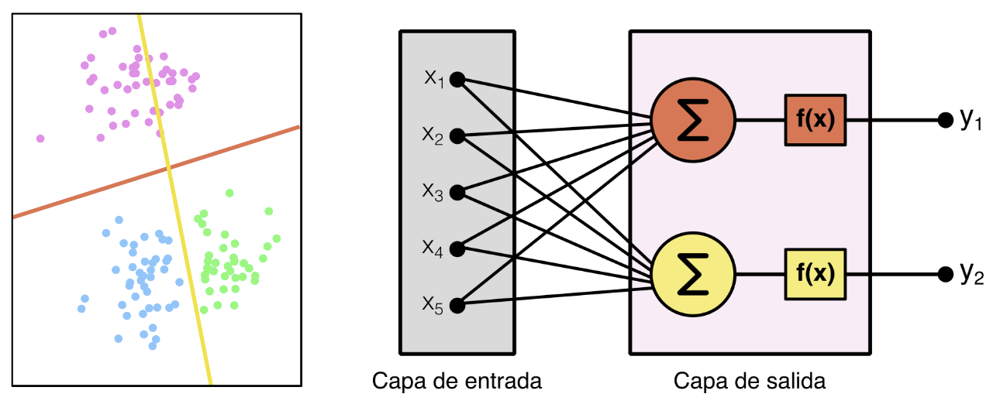
Necesitamos apilar capas de muchas neuronas, lo que da origen a la primera red neuronal moderna: las Redes de Perceptrones Multicapa (MLP) con conexión hacia adelante (Multilayer Perceptrons).
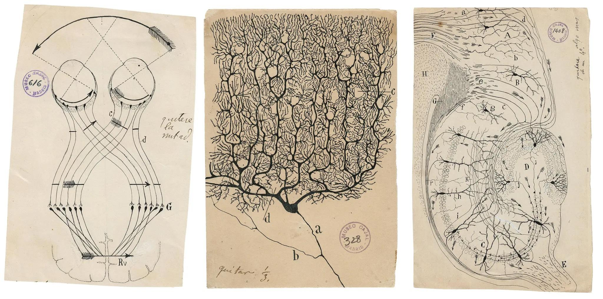
Esta arquitectura agrega una o más capas ocultas, donde todas las neuronas de una capa están conectadas con todas las neuronas de la capa siguiente (fully connected).
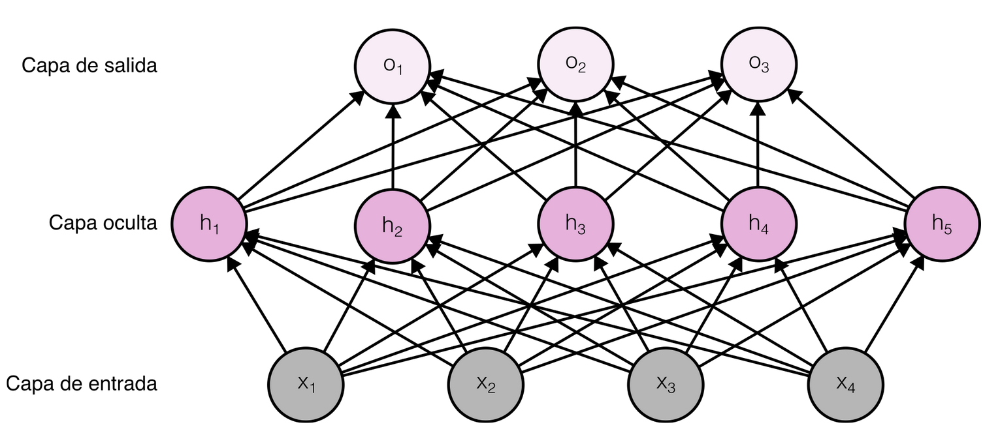
Empecemos por una red donde la función de activación es lineal en todas las neuronas. Si tenemos una entrada $\mathbf{X}_{1 \times d}$ (un vector de $d$ features):
$$\mathbf{H} = \mathbf{X}\,\mathbf{W}^{(1)} + \mathbf{b}^{(1)}$$
Donde:
La capa de salida se calcula de manera análoga:
$$\mathbf{O} = \mathbf{H}\,\mathbf{W}^{(2)} + \mathbf{b}^{(2)}$$
Donde:
Si juntamos las dos ecuaciones y sustituimos $\mathbf{H}$ en la salida:
$$\mathbf{O} = (\mathbf{X}\,\mathbf{W}^{(1)} + \mathbf{b}^{(1)})\,\mathbf{W}^{(2)} + \mathbf{b}^{(2)}$$
$$\mathbf{O} = \mathbf{X}\,\mathbf{W}^{(1)}\mathbf{W}^{(2)} + (\mathbf{b}^{(1)}\mathbf{W}^{(2)} + \mathbf{b}^{(2)})$$
Como las matrices se pueden multiplicar entre sí:
$$\mathbf{O} = \mathbf{X}_{1 \times d}\,\underbrace{\mathbf{W}^{(1)}_{d \times h}\mathbf{W}^{(2)}_{h \times q}}_{\mathbf{W}_{d \times q}} + \underbrace{(\mathbf{b}^{(1)}_{1 \times h}\mathbf{W}^{(2)}_{h \times q} + \mathbf{b}^{(2)}_{1 \times q})}_{\mathbf{b}_{1 \times q}}$$
La red colapsa a una única capa de neuronas. Por lo tanto, una MLP NO tiene sentido si no usamos funciones de activación no lineales.
Para evitar el colapso, basta con introducir una función de activación no lineal $\sigma$ en la capa oculta:
$$\mathbf{H} = \sigma(\mathbf{X}\,\mathbf{W}^{(1)} + \mathbf{b}^{(1)})$$
$$\mathbf{O} = \mathbf{H}\,\mathbf{W}^{(2)} + \mathbf{b}^{(2)}$$
$$\mathbf{H}^{(1)} = \sigma(\mathbf{X}\,\mathbf{W}^{(1)} + \mathbf{b}^{(1)})$$
$$\mathbf{H}^{(2)} = \sigma(\mathbf{H}^{(1)}\,\mathbf{W}^{(2)} + \mathbf{b}^{(2)})$$
$$\dots$$
Como trabajamos con productos matriciales, podemos calcular mini-batches de una sola vez. Si la entrada es de $n$ observaciones con $d$ features, $\mathbf{X}_{n \times d}$:
$$\mathbf{H}_{n \times h} = \sigma(\mathbf{X}_{n \times d}\,\mathbf{W}^{(1)}_{d \times h} + \mathbf{b}^{(1)}_{1 \times h})$$
Pequeño abuso de notación: el vector $\mathbf{b}$ se repite $n$ veces (broadcasting) y la función $\sigma$ se aplica elemento a elemento sobre toda la matriz.
En NumPy estas operaciones son muy fáciles de implementar y, además, son eficientes porque aprovechan aquello en lo que las CPUs son buenas: operaciones matriciales sobre regiones contiguas de memoria RAM.
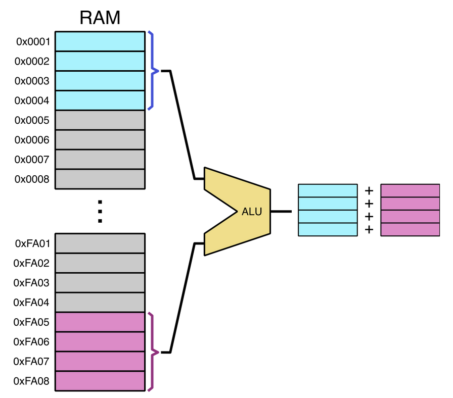
Por esta razón, las librerías de Deep Learning son librerías de tensores:
Un tensor es un objeto algebraico que describe una relación multilineal entre conjuntos de objetos algebraicos relacionados con un espacio vectorial.
Como las neuronas se describen con operaciones de tensores, y los CPUs/GPUs son rápidos operando tensores, es lógico que las librerías se enfoquen en estas herramientas. De ahí el nombre TensorFlow (flujo de tensores).
En 1989, Cybenko publicó un paper donde demostró matemáticamente lo siguiente:
Una red MLP con una sola capa oculta y funciones de activación sigmoideas puede modelar cualquier función matemática, siempre que tenga suficientes neuronas y el conjunto correcto de pesos sinápticos.
ReLU (rectified linear unit) es la elección más popular hoy en día y la que inició la revolución del Deep Learning en 2010.
$$\text{ReLU}(x) = \max(0, x)$$
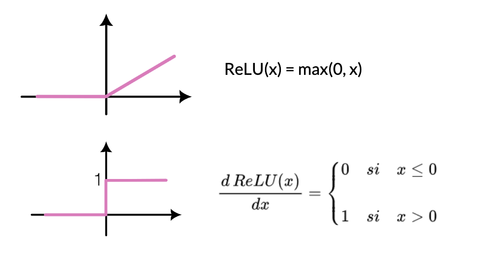
ReLU tiene muchas variantes. Una de las más usadas es la pReLU (parametrized rectified linear unit):
$$\text{pReLU}(x) = \max(0, x) + \alpha \cdot \min(0, x)$$
Permite que pase algo de información cuando el argumento es negativo, controlado por el parámetro $\alpha$.
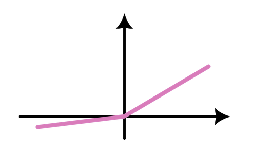
Función sigmoidea (ya la vimos):
$$\sigma(x) = \frac{1}{1 + e^{-x}}$$
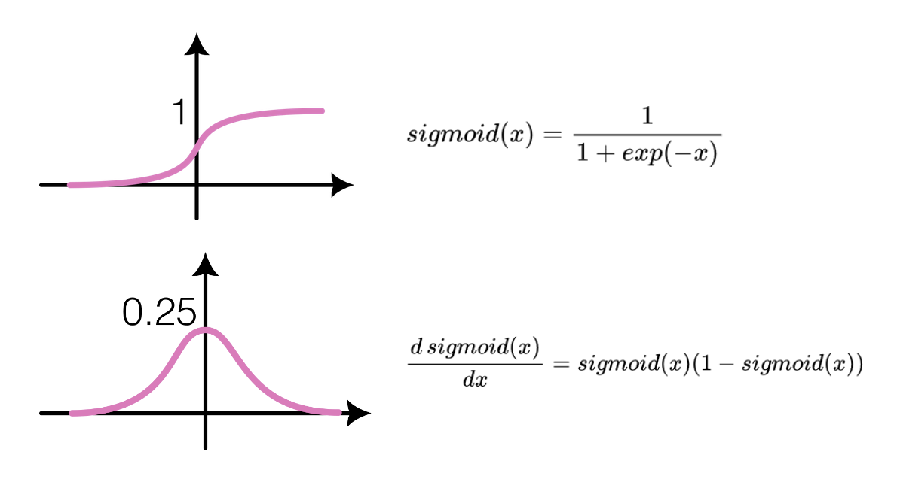
Función tangente hiperbólica (también la vimos):
$$\tanh(x) = \frac{e^{x} - e^{-x}}{e^{x} + e^{-x}}$$
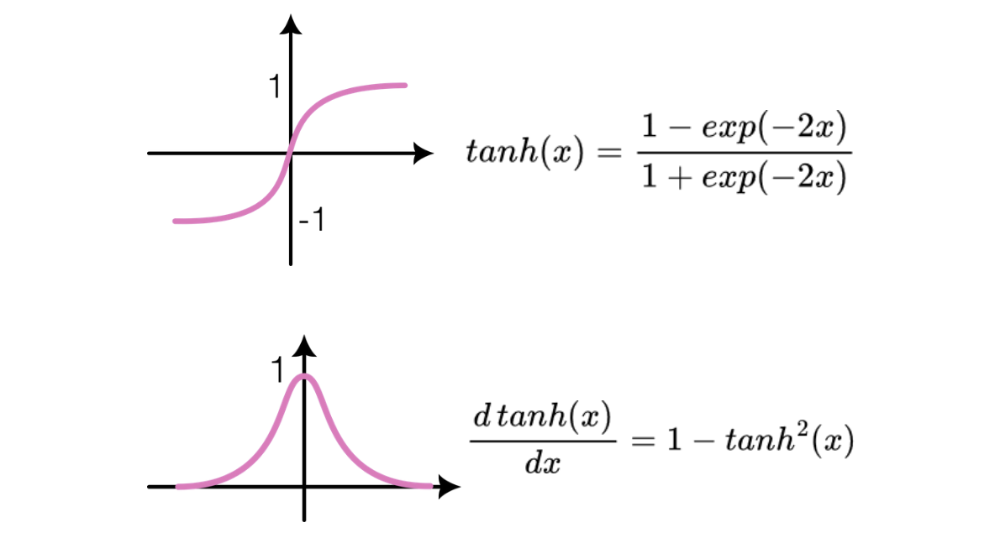
La propagación hacia adelante (forward propagation) consiste en avanzar desde la entrada hacia la salida, calculando y almacenando el valor de cada capa hasta obtener la salida final del modelo.
Veamos un ejemplo simplificado: una red sin bias con una entrada $\mathbf{X}_{d}$.
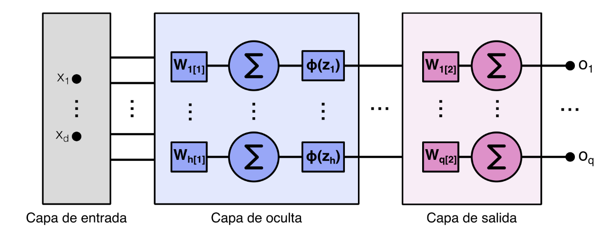
Para la entrada $\mathbf{X}_d$, la salida lineal de la capa oculta es:
$$\mathbf{Z}_h = \mathbf{W}^{(1)}_{h \times d}\,\mathbf{X}_d$$
Luego pasamos $\mathbf{Z}$ por la función de activación $\phi$:
$$\mathbf{H} = \phi(\mathbf{Z})$$
Y la salida final de la red es:
$$\mathbf{O} = \mathbf{W}^{(2)}\,\mathbf{H}$$
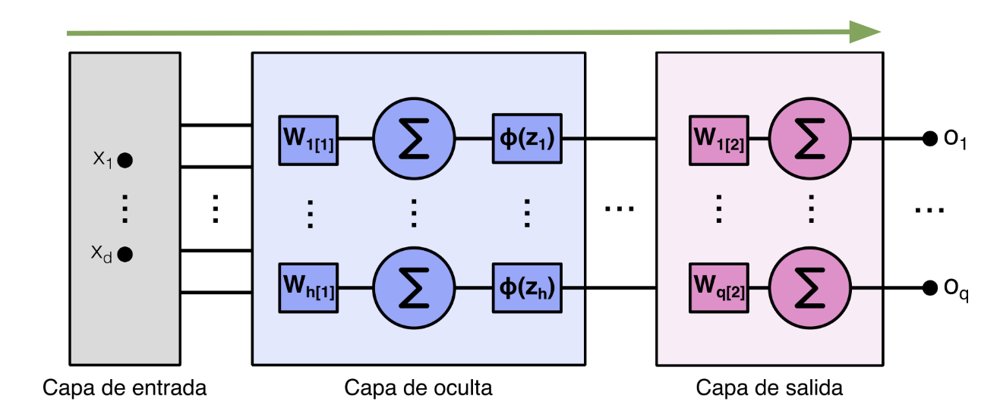
La red tiene una función de costo $l$. Para la entrada de ejemplo con salida verdadera $\mathbf{y}$ podemos calcular:
$$L = l(\mathbf{O}, \mathbf{y})$$
Si agregamos una función de regularización $s$ (por ejemplo, decaimiento de pesos),
$$s = \frac{\lambda}{2} \left( \|W^{(1)}\|^2 + \|W^{(2)}\|^2 \right)$$
Donde $\lambda$ es el parámetro de regularización.
La función de pérdida total queda:
$$J = L + s$$
Esta es la cantidad que queremos minimizar durante el entrenamiento.
Backpropagation se refiere al método para calcular el gradiente de los parámetros de la red. Se arranca desde la salida y se avanza hacia la entrada aplicando la regla de la cadena.
$$\frac{\partial \mathbf{Z}}{\partial \mathbf{X}} = \text{prod}\left(\frac{\partial \mathbf{Z}}{\partial \mathbf{Y}}, \frac{\partial \mathbf{Y}}{\partial \mathbf{X}}\right)$$
El operador $\text{prod}$ multiplica los argumentos después de aplicar las operaciones necesarias (transposiciones, intercambio de posiciones).
Volvamos al ejemplo de la propagación hacia adelante: queremos calcular los gradientes de $J$ respecto a los pesos de cada capa.
$$ \frac{\partial J}{\partial W^{(1)}}, \qquad \frac{\partial J}{\partial W^{(2)}} $$
Aplicamos la regla de la cadena, y el orden de los cálculos se invierte respecto al de la propagación hacia adelante.
Primer paso: calcular el gradiente de la función objetivo respecto al término de pérdida $L$ y al término de regularización $s$:
$$\frac{\partial J}{\partial L} = 1, \qquad \frac{\partial J}{\partial s} = 1$$
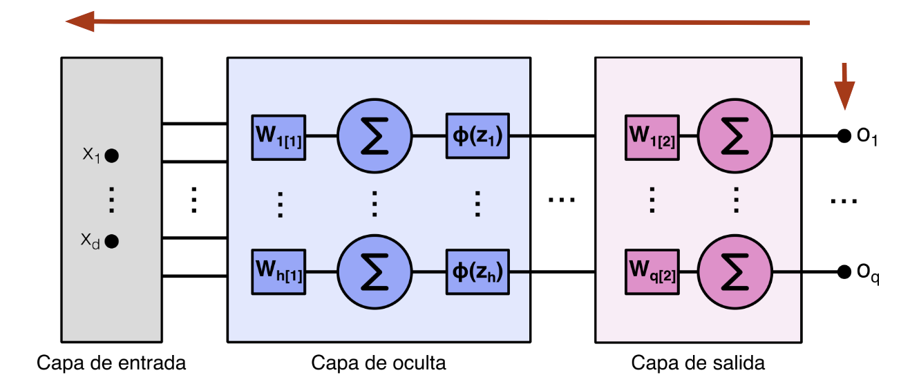
A continuación, calculamos el gradiente de la función objetivo respecto a la variable de la capa de salida $\mathbf{O}$ aplicando la regla de la cadena:
$$\frac{\partial J}{\partial \mathbf{O}} = \text{prod}\left(\frac{\partial J}{\partial L}, \frac{\partial L}{\partial \mathbf{O}}\right) = \frac{\partial L}{\partial \mathbf{O}} \in \mathbb{R}^{q}$$
Luego, calculamos el gradiente de los términos de regularización respecto a ambos parámetros:
$$\frac{\partial s}{\partial \mathbf{W}^{(1)}} = \lambda \mathbf{W}^{(1)}, \qquad \frac{\partial s}{\partial \mathbf{W}^{(2)}} = \lambda \mathbf{W}^{(2)}$$
Ahora calculamos el gradiente respecto a los pesos de la capa de salida $\mathbf{W}^{(2)}$:
$$\frac{\partial J}{\partial \mathbf{W}^{(2)}} = \text{prod}\left(\frac{\partial J}{\partial \mathbf{O}}, \frac{\partial \mathbf{O}}{\partial \mathbf{W}^{(2)}}\right) + \text{prod}\left(\frac{\partial J}{\partial \mathbf{s}}, \frac{\partial \mathbf{s}}{\partial \mathbf{W}^{(2)}}\right) = \frac{\partial J}{\partial \mathbf{O}} \mathbf{H}^T + \lambda \mathbf{W}^{(2)} \in \mathbb{R}^{q \times h}$$
Para llegar a los pesos de la capa oculta, necesitamos seguir propagando. El gradiente respecto a la salida de la capa oculta es:
$$\frac{\partial J}{\partial \mathbf{H}} = \text{prod}\left(\frac{\partial J}{\partial \mathbf{O}}, \frac{\partial \mathbf{O}}{\partial \mathbf{H}}\right) \in \mathbb{R}^{h}$$
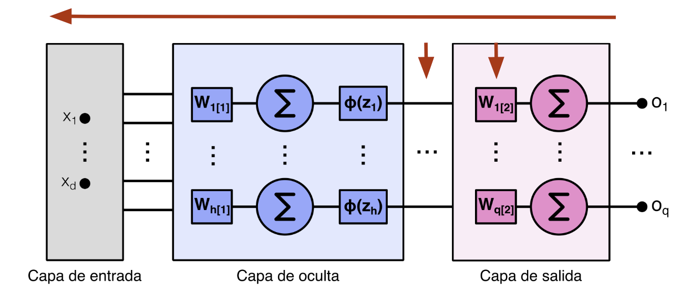
Como la función de activación $\phi$ se aplica elemento a elemento, calcular el gradiente de la variable intermedia $\mathbf{Z}$ requiere usar el operador de multiplicación elemento a elemento, que denotamos con $\odot$:
$$\frac{\partial J}{\partial \mathbf{Z}} = \text{prod}\left(\frac{\partial J}{\partial \mathbf{H}}, \frac{\partial \mathbf{H}}{\partial \mathbf{Z}}\right) = \frac{\partial J}{\partial \mathbf{H}} \odot \phi'(\mathbf{Z}) \in \mathbb{R}^{h}$$
Finalmente, obtenemos el gradiente de los pesos de la capa oculta $\mathbf{W}^{(1)}$:
$$\frac{\partial J}{\partial \mathbf{W}^{(1)}} = \text{prod}\left(\frac{\partial J}{\partial \mathbf{Z}}, \frac{\partial \mathbf{Z}}{\partial \mathbf{W}^{(1)}}\right) + \text{prod}\left(\frac{\partial J}{\partial \mathbf{s}}, \frac{\partial \mathbf{s}}{\partial \mathbf{W}^{(1)}}\right) = \frac{\partial J}{\partial \mathbf{Z}} \mathbf{X}^T + \lambda \mathbf{W}^{(1)} \in \mathbb{R}^{h \times d} $$
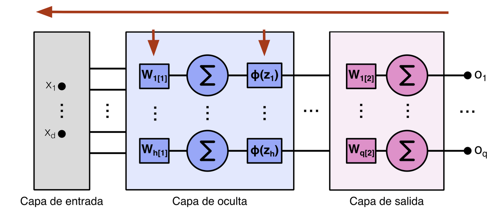
Resumiendo, los gradientes de los pesos quedan:
En este flujo se observa el fenómeno de propagación hacia atrás: cada gradiente reutiliza los anteriores, en sentido inverso al forward.
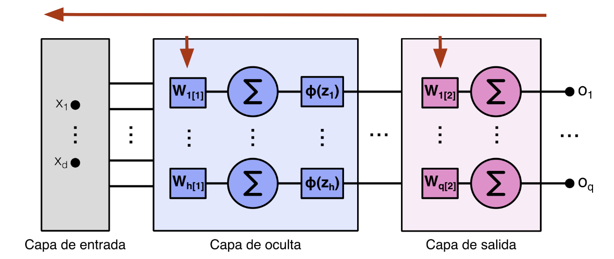
Por eso ReLU es más popular: evita este fenómeno en la región positiva.
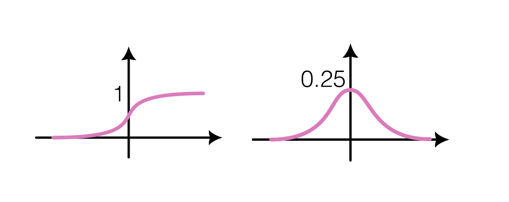
El otro extremo es cuando los gradientes explotan por errores numéricos.
Un punto importante: las redes MLP son inherentemente simétricas.
Si todas las neuronas de una capa se inicializan con el mismo valor, al propagar el gradiente hacia atrás cada neurona recibe la misma actualización.
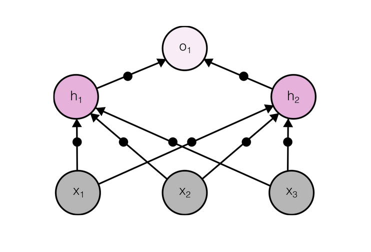
La forma de mitigar estos fenómenos es a través de una correcta inicialización de los pesos. Otras estrategias complementarias son la regularización y los optimizadores.
Inicialización de Xavier: permite inicializar los pesos al azar usando cualquier distribución, manteniendo media cero y desvío estándar igual a:
$$\sigma = \sqrt{\frac{2}{n_{\text{in}} + n_{\text{out}}}}$$
Sirve para evitar el escalamiento que aparece tanto en propagación hacia adelante como hacia atrás.
No las cubriremos en detalle, pero es bueno saber que existen.
Un buen modelo es aquel que generaliza, es decir, funciona bien con datos nuevos.
En Machine Learning, para cerrar la brecha entre el rendimiento de entrenamiento y el de prueba, se suele recomendar apuntar a un modelo simple.
Otra propiedad clave de un modelo simple es la suavidad: la salida no debe ser sensible a pequeños cambios en la entrada.
Esta idea se traslada a redes neuronales con el concepto de Dropout:
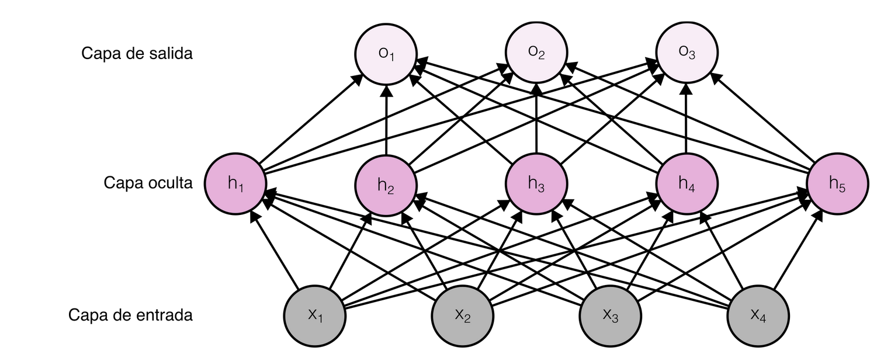
Durante el entrenamiento se desactiva un porcentaje de neuronas (poniendo su salida en cero) según una probabilidad umbral. En testeo, se habilitan todas las neuronas.
Durante el entrenamiento se desactiva un porcentaje de neuronas (poniendo su salida en cero) según una probabilidad umbral. En testeo, se habilitan todas las neuronas.
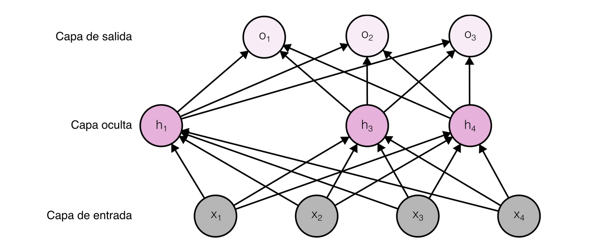
Bioingeniería - Facultad de Ingeniería - UNSTA